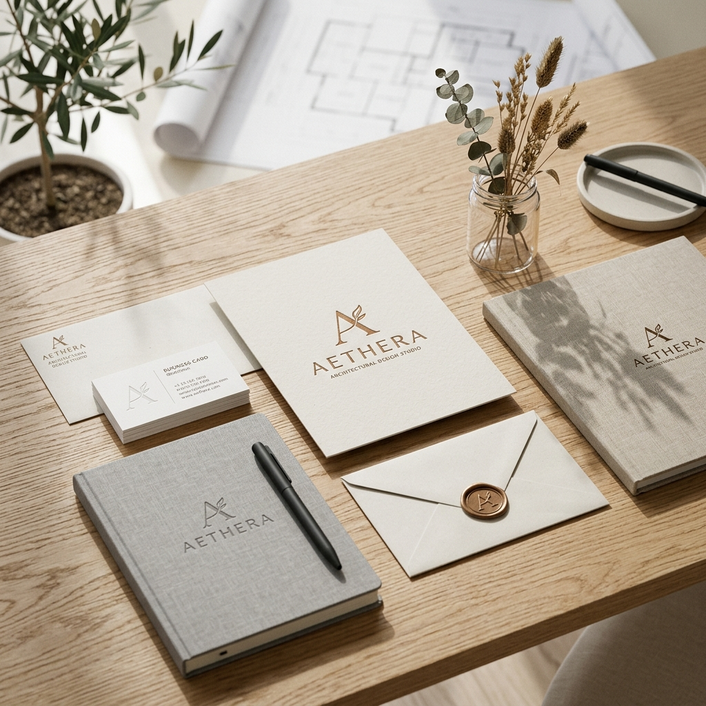
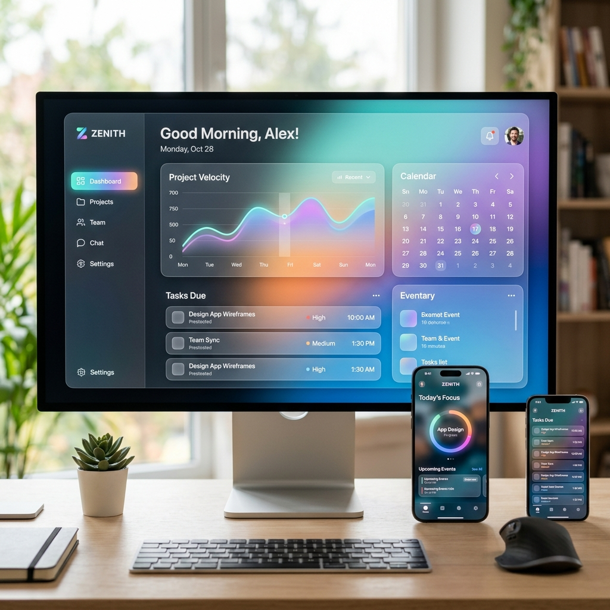

As minhas Áreas de
Atuação.
Este é um resumo das minhas principais competências técnicas e criativas.
Aqui estão presentes as áreas onde foco a minha experiência para
entregar soluções digitais
de impacto adequadas a cada cliente.
O meu Processo.
Imersão &
Estratégia
Analiso os teus objetivos, público-alvo e mercado para traçar um caminho claro e eficaz.
Criação &
Iteração
Desenvolvo conceitos visuais e protótipos focados na experiência do utilizador e estética premium.
Código &
Entrega
Transformo designs em produtos reais, utilizando tecnologias de ponta e garantindo performance absoluta.

Design &
Branding
Criação de identidades visuais memoráveis e sistemas de design que comunicam o propósito da tua marca.

Dev Full-Stack
Desenvolvimento de aplicações web robustas e escaláveis, do front-end ao back-end.

Multimédia
& Foto
Captura e edição de conteúdo visual de alta qualidade para redes sociais e websites.
Data Science
& IA
Análise de dados e integração de inteligência artificial no teu negócio.

Consultoria
Tech
Apoio estratégico para a escolha das melhores tecnologias para o teu projeto.